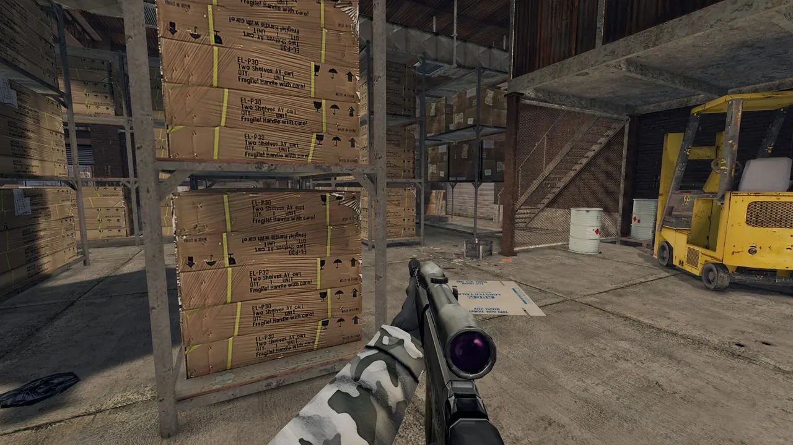

Moteur de rendu DirectX 12
Chaque image est rendue en DirectX 12 dans la fenêtre du jeu. L'anticrénelage, les ombres ambiantes, le HDR, le bloom et l'accentuation sont en option. Les PC plus anciens basculent automatiquement sur OpenGL.
 Nouveau devlogHear the fight
Nouveau devlogHear the fight


Le FPS tactique classique, reconstruit en jeu natif 64 bits avec un moteur de rendu DirectX 12. Les maps, les soldats et le HUD d'origine, et un launcher qui héberge vos serveurs et maintient le jeu à jour.
Six cartes d’origine reconstruites sous DirectX 12, des armes réelles et des rounds qui se jouent sur une seule erreur. Voici TrueCombat: Platinum en mouvement.

La vidéo est lue depuis YouTube en mode de confidentialité avancée. Rien n'est chargé depuis YouTube tant que vous n'appuyez pas sur lecture.
Musique : « Venom » de Scott Buckley, publiée sous licence CC BY 4.0. scottbuckley.com.au
Voir sur YouTubeEvery gun gets its own voice, impacts get twelve variations per surface, and the sound engine learns about rooms, doorways and distance. Plus free aim and two-handed AKs. The full story of update 0.39.3.
TrueCombat: Elite était une conversion totale réaliste de combat moderne pour Enemy Territory : une vie par round, des armes réelles et des maps conçues pour un jeu lent et prudent. Il tourne toujours comme un mod 32 bits sur un moteur de 2003.
TrueCombat: Platinum le reconstruit en jeu Windows natif 64 bits. Le moteur de rendu est un nouveau code DirectX 12, le HUD est calqué sur l'original au pixel près et les vitesses de déplacement reprennent directement les valeurs d'origine. Si DirectX 12 pose problème, Safe start lance le jeu en OpenGL.

Chaque image est rendue en DirectX 12 dans la fenêtre du jeu. L'anticrénelage, les ombres ambiantes, le HDR, le bloom et l'accentuation sont en option. Les PC plus anciens basculent automatiquement sur OpenGL.
Disposition, polices, boussole, barre d'endurance, chrono du round et lignes d'objectif de TC:E. La silhouette vire au jaune, à l'orange puis au rouge à mesure que vous encaissez des dégâts.
Sprintez avec Shift jusqu'à épuisement de l'endurance, penchez-vous aux angles avec Q et E, accroupissez-vous avec C et allongez-vous avec X. Les échelles et l'eau fonctionnent comme dans TC:E, et chaque vitesse correspond à l'original.
Chaque tir touche une zone qui a ses propres dégâts. Un joueur accroupi ou allongé offre une cible plus petite.
Les 27 armes à feu, le couteau et toutes les grenades, avec les dégâts, le recul et la dispersion d'origine. Les balles traversent portes, murs et caisses, en perdant de la puissance à chaque surface.
Le launcher cherche les nouvelles versions sur GitHub, affiche la vitesse de téléchargement et le temps restant, et n'installe que les mises à jour signées par Team Terminus. Vos réglages et vos serveurs sont conservés.


Chaque image est une capture directe du moteur de rendu DirectX 12. Aucune retouche.


Faites glisser sur l'image pour comparer le rendu d'origine aux nouveaux préréglages. Même endroit, même image, la gare de triage ouest de Railhouse en 1440p.
Les textures HD du décor, des modèles, du HUD et des menus sont installées par défaut. Sur les cartes RTX, les modes de qualité DLSS sont aussi disponibles : saisissez r_dx12Dlss 2 à 5 dans la console, puis vid_restart.

 Low
Ultra
Low
Ultra

Deux serveurs officiels européens tournent 24 h sur 24 : le n° 1 Ranked, où chaque match compte pour les classements, et le n° 2 Unranked, animé par des bots. Tout serveur hébergé avec List publicly activé apparaît ici et dans l'onglet Servers du launcher.
Vous pouvez toujours héberger depuis le launcher et partager votre adresse. Les autres vous rejoignent par défaut sur le port UDP 27971. Tous les joueurs d'un match doivent avoir la même version.
| Serveur | Map | Joueurs | Mode |
|---|
Chargement de la liste des serveurs en direct. L'onglet Servers du launcher affiche la même liste.

Ready-up, round au couteau pour le choix des côtés, mi-temps et temps morts tactiques qui figent tout le match. Une seule commande, sur n'importe quel serveur.
Mode match
Le FPS tactique réaliste bâti sur Enemy Territory, jouable aujourd'hui sur Windows 10 et 11.
TC:E aujourd'huiToutes les mises à jour depuis la première version publique figurent sur la page des actualités (en anglais), avec un flux RSS. Les téléchargements sont sur GitHub Releases.
Lisez le guide du débutant pour les commandes, les modes de jeu et quelques conseils pour rester en vie plus longtemps. La page des armes recense toutes les armes de TC:E.
Oui. Téléchargez-le depuis GitHub Releases et jouez. Chaque version inclut son code source et les licences des fichiers du jeu d'origine.
Récupérez le kit presse avec les logos, des captures d'écran et une fiche d'information.
Oui. Choisissez un serveur officiel européen dans l'onglet Servers du launcher, classé ou non, rejoignez n'importe quel autre serveur public, ou hébergez votre propre match en quelques clics.
Oui, et plus encore. Toutes les armes, les sept modes de jeu, la vitesse de déplacement d'origine, l'inclinaison, les échelles, la nage, l'escalade des rebords et la lunette de sniper sont là, avec des nouveautés comme la minicarte en direct et un mode match compétitif. La feuille de route montre la suite.
Rejoignez le Discord de TrueCombat: Platinum. C'est là que les matchs s'organisent, que les serveurs se partagent et que les nouvelles versions sont annoncées en premier.
Appuyez sur Safe start dans le launcher. Le jeu tourne alors en OpenGL dans une fenêtre de 1280 × 720, et il bascule aussi de lui-même sur OpenGL si DirectX 12 échoue.